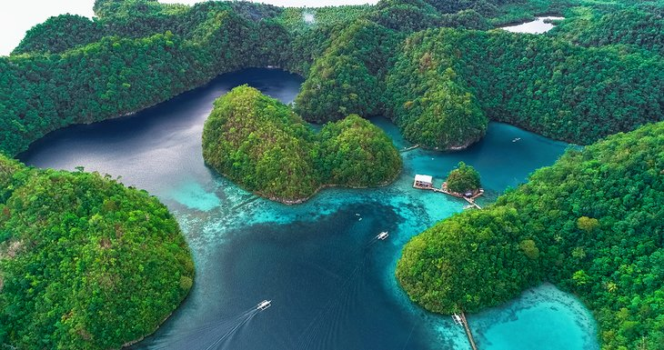
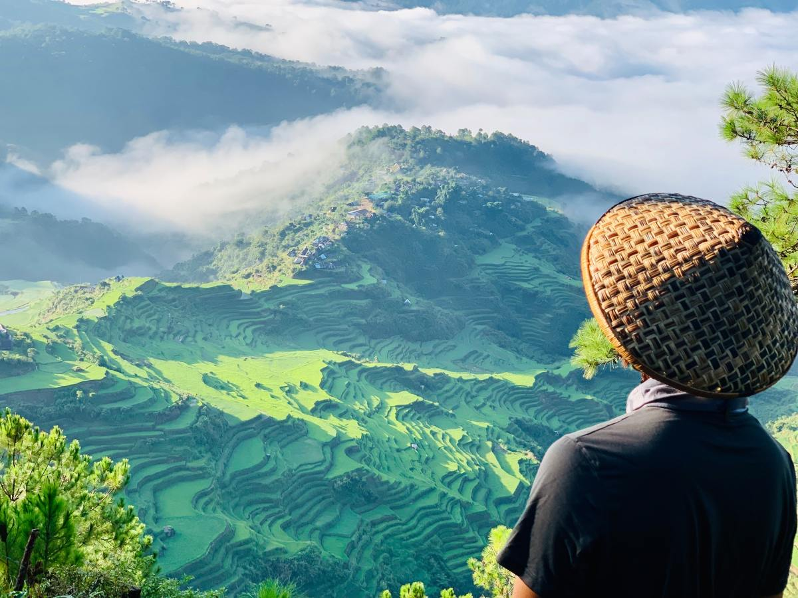
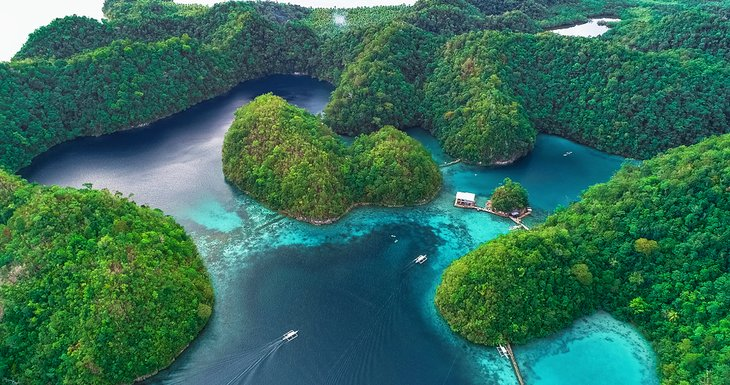
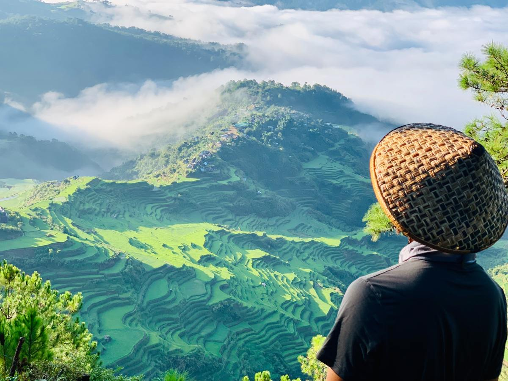

About
Anghila Goriding Villaran
I am a beginner in the Bachelor of Science in Computer Science
at
Surigao del Norte State University.
I have always had a passion for technology and problem-solving,
which is what led me to pursue a degree in computer science. I
am excited to learn new programming languages and technologies,
and to eventually use my skills to make a positive impact in the
world.
In my free time, I enjoy creating websites that revolve around
my hobbies of cooking, traveling, and playing sports. I have
always had a passion for technology and problem-solving, which
is why I decided to pursue a degree in computer science. I am
looking forward to making connections with my fellow classmates
and learning from my professors during my time in the Bachelor
of Science in Computer Science.
Gallery

 


